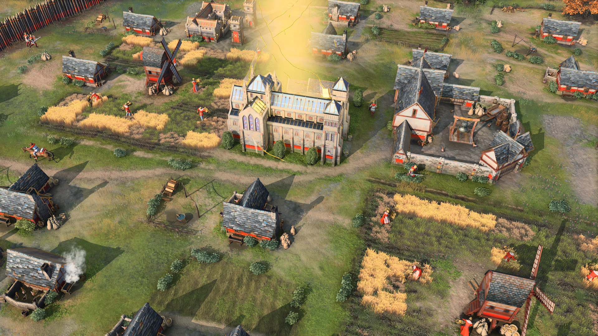

Juegos de simulaciones
Age of Empires
¡Revive la historia y construye tu imperio! Este juego de estrategia en tiempo real te lleva a través de las épocas, permitiéndote liderar civilizaciones icónicas, librar batallas épicas y tomar decisiones que cambiarán el curso de la historia. Con campañas emocionantes y una jugabilidad profunda, es perfecto para los amantes de la estrategia. ¡El destino de tu imperio está en tus manos!
Civilization VI

¡Da forma al mundo como un verdadero líder! Este aclamado juego de estrategia por turnos te permite construir y expandir tu civilización desde los albores de la humanidad hasta la era moderna. Toma decisiones cruciales, negocia con líderes históricos y asegura tu lugar en la historia. Con mapas dinámicos y un sinfín de posibilidades, cada partida es una experiencia única. ¡El destino de tu civilización está en tus manos!